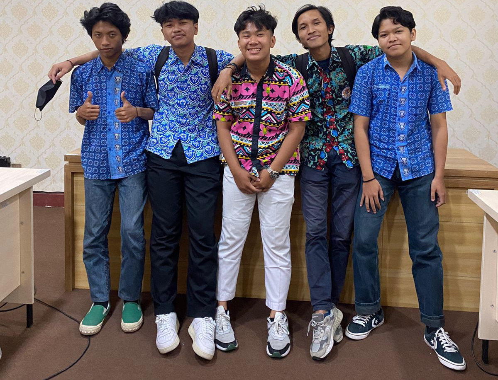
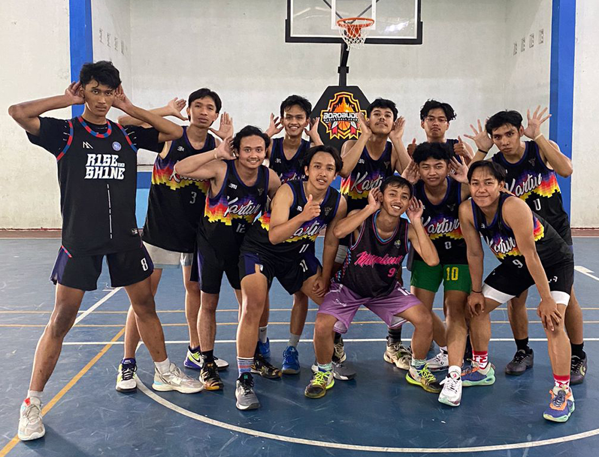
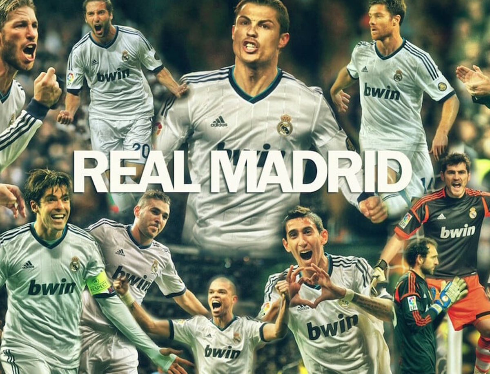
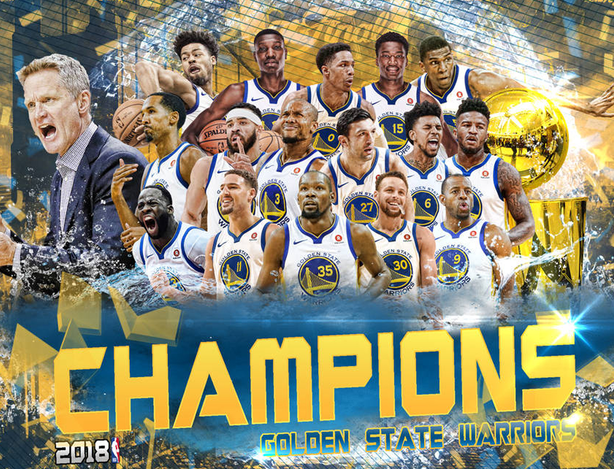
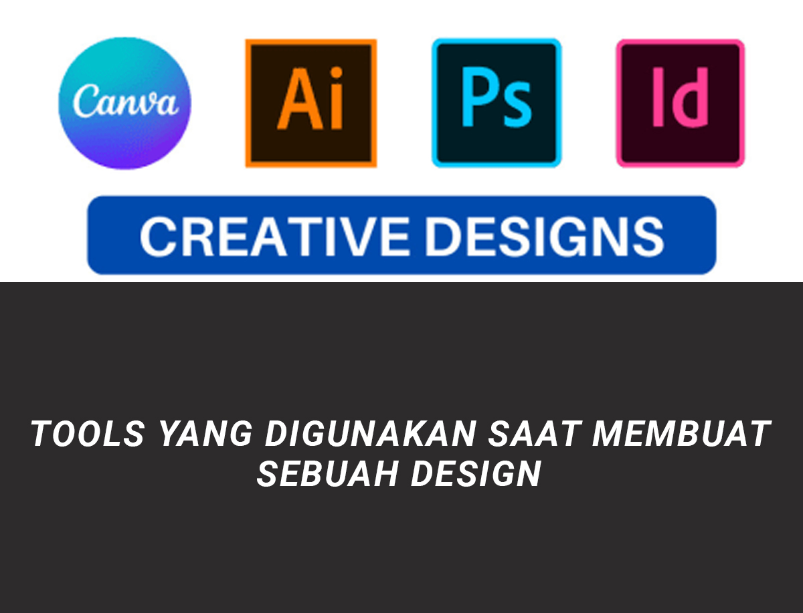

Summary

Saya merupakan seorang mahasiswa D3-Teknik Informatika Universitas Sebelas Maret Semester 4.
Dan dibawah ini merupakan summary singkat saya sebagai mahasiswa biasa pecinta coding dan design.
Ambisius dan Produktif, mungkin dua kata tersebut yang menggambarkan diri saya pribadi, saya seorang
mahasiswa yang sangat menyukai design namun juga menyukai pemrograman, sebelumnya saya tertarik dalam
bidang ini karena terdapat pemrograman Front-End didalamnya dan saya dapat mengasah kemampuan saya disini.
Selain memiliki kemampuan dalam HTML, CSS, Java, PHP, saya juga memiliki kemampuan dalam bidang design dan
video editing dengan software seperti, PS, AI dan juga AE, serta Premiere Pro.
Selain mencintai kedua hal tersebut saya juga memiliki ambisi untuk menguasai Machine Learning dan pemrograman
secara professional, dalam prosesnya saya yakin bahwa kedepannya saya dapat membahagiakan orang saya dengan
tekad
saya ini.
Hobby

Dibawah ini terdapat beberapa alasan mengapa saya menyukai basket, dan mengapa hobi saya basket.
- Basket merupakan olahraga yang menyenangkan dan asyik, kita dapat menggerakkan kaki kita secara
leluasa untuk menguasai skill-skill tertentu.
- Terdapat banyak komunitas basket dimana saja, basket akhir-akhir ini banyak digemari banyak kalangan
dari tua hingga muda, banyak orang yang tertarik dalam bermain basket.
- Basket bukan hanya olahraga biasa, basket merupakan olahraga yang rumit karena banyak aturan
dan banyaknya teknik yang dilarang didalamnya agar kita bermain secara disiplin.
Favorite Club
Dibawah ini terdapat dua klub yang saya dukung dalam olahraga :
Real Madrid

Real Madrid, merupakan klub sepak bola profesional yang berlokasi di Madrid, Spanyol.
Didirikan pada tahun 1902 sebagai Madrid Football Club, secara tradisional mengenakan kostum home putih.
Kata Real ("dari kerajaan") Spanyol dan dianugerahkan ke klub oleh Raja Alfonso XIII pada tahun 1920
bersama-sama dengan mahkota kerajaan di lambang klub. Klub favorit saya ini telah memainkan pertandingan
kandang di
Stadion Santiago Bernabéu dengan kapasitas 85.454 di pusat kota Madrid sejak tahun 1947 kala itu.
Real Madrid menjadi klub favorit saya karena Real Madrid telah memenangkan banyak gelar dalam ajang
kompetisi skala dunia seperti UCL dan Fifa Club World Cup.
Real Madrid memiliki banyak fans bahkan terbanyak daripada klub lainnya, sejak saat itu saya menjadi salah
satunya dengan nama Madrididista dan kami memiliki rival yang bernama Barcelona.
Golden State Warriors

Golden State Warriors merupakan sebuah tim bola basket profesional Amerika Serikat yang berlokasi di San
Francisco, California. Warriors berkompetisi di National Basketball Association (NBA), sebagai anggota
Wilayah Barat, Divisi Pasifik. Didirikan pada tahun 1946 di Philadelphia.
GSW atau Golden State Warriors memiliki banyak trophy dan kejuaraan yang dimenangkan, hal yang saya suka
dari tim ini adalah mereka tim yang solid dan memiliki khas berupa shoot oleh para pemainnya yang memiliki
akurasi tinggi dalam jarak yang cukup jauh seperti Stephen Curry, Klay Thompson dan juga Jordan Poole saat
ini.
Design

Saya memiliki hobi lain yang dinamakan mendesain atau desain yang dimana hobi ini baru saya dapatkan akhir
akhir ini karena saya mengikuti sebuah organisasi dan sebenarnya saya dipaksa mendesain kala itu, namun saya
menjadi menyukai desain karena itu merupakan suatu hal yang menarik dan kreatif.
Desain yang saya buat sudah banyak dan bahkan sudah masuk dalam feed instagram dengan ribuan followers, Ya
benar, itu menjadi feed Instagram organisasi saya kala itu dan saya sangat bangga karena saya dapat menguasai
skill photoshop, AI, dan juga After Effect serta Premiere Pro.